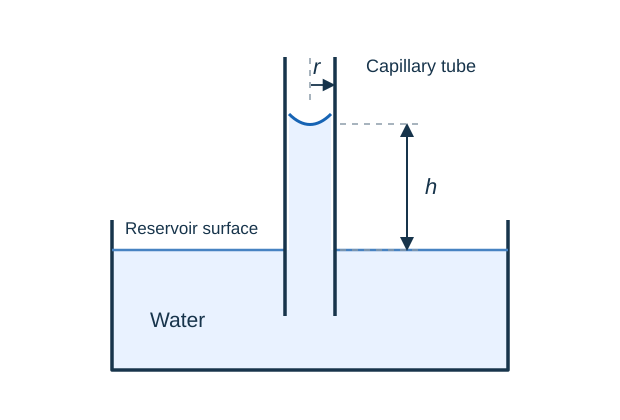
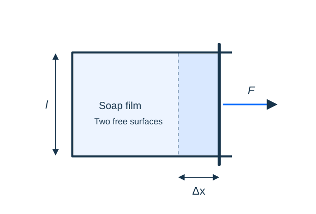

Surface tension
A liquid surface resists an increase in area. Begin with surface energy and the contact angle, then use force balance and pressure differences to study films, drops and capillary rise.
Why water rises in a narrow tube
When water wets a clean glass tube, the surface meets the wall at an acute contact angle. The upward component of the surface-tension force balances the weight of the raised column.
Measure the rise from the reservoir surface to the meniscus. For the same liquid and contact angle, a narrower tube gives a greater rise.

Figure 1. Capillary rise h in a wetting liquid. The internal tube radius is r; the diagram is schematic.
Concepts and notes
-

Surface energy and work
Connect surface tension with the work needed to increase a liquid’s exposed area. -
Contact angle and wetting
Understand the contact angle, wetting and the shape of a liquid surface next to a solid. -
Capillary rise
Build the force balance for a wetting tube and identify the assumptions behind the result.
Worked examples
-
Force balance in a capillary tube
Find the rise of a wetting liquid and explain how the result changes with the tube radius. -
Stretching a soap film
Calculate the pulling force and work done, accounting for the film’s two free surfaces. -
Pressure inside a soap bubble
Relate the pressure difference to curvature and distinguish a soap bubble from a liquid drop.
Practice assignments
-
Surface tension: problem set
Practise forces, surface energy and pressure differences through a connected set of questions. -
Capillarity: extension problems
Test the limits of the standard model with connected tubes and changing liquid levels.